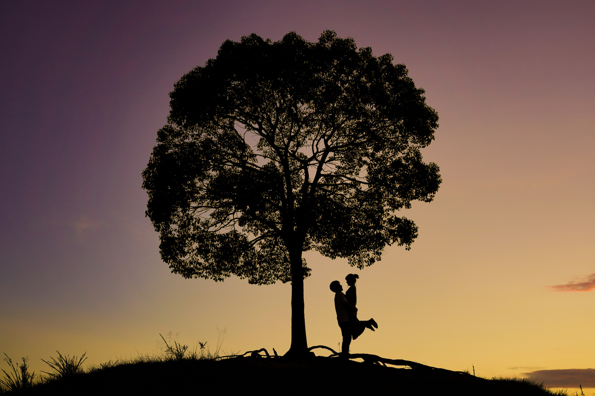

smilechan2525


人に撮られ慣れていない私たちでしたが笑って〜とか声かけしてもらったおかげで見返してもほぼ笑っている写真ばかりでお願いしてよかったなと思いました！木漏れ日が素敵な場所を選んでもらったり、ポーズも提案してもらえたので、思った以上に本当に素敵に撮ってもらえて感謝です！ありがとうございました！
全体を通して本当に楽しかったので満足しています。ケンさんの優しい雰囲気のおかげで人見知りの私でも警戒心持たずにリラックスして撮影できました！
とても楽しく、自然に撮影して頂き嬉しかったです！！始まる前は少し緊張していましたがケンさんの優しい人柄のお陰で、自然な表情で撮影してもらえることが出来たと思います！カップルフォトを撮って頂くのは初めてだったので本当に嬉しかったです！
DMのやりとりから、とても丁寧で、ご依頼したいなと思わせてくださいました。当日も事前に撮影スポットを確認していただいて、スムーズに撮影できとても楽しかったです！！こんなポーズ撮りたいとお願いしたら全て叶えて頂き、ポーズも色々考えてくださってありがとうございました。リラックスして撮影でき、自然体に撮ることができました。ケンさんの人柄のお陰で自然な笑顔が引き出されて、終始和やかに撮影できました！
ケンさんが優しそうな方で緊張せずに撮影できました！ポーズも指定してくださってありがたかったです！
初めての撮影だったので緊張や不安もあったのですが、ケンさんの柔らかなお人柄のおかげで旦那も私も楽しくリラックスすることができました！構図などはほとんどお任せしてしまいましたが、指示も的確で分かりやすく、たくさんアイデアを出して頂いて有難かったです。また機会があればケンさんに撮影して欲しいと帰り道は二人で話していました！ありがとうございました！
事前に撮って頂きたいイメージを共有させて頂くことができたので、とってもスムーズだったと思います！ケンさんのお人柄のおかげだと思うのですが、当日はとても楽しかったです！写真も私たちの素に近かったように思います。素人目線ですがレタッチも素敵でした！
希望してた写真も撮っていただけて、それ以外にも色々提案していただけていろんな写真が撮れたのでとても楽しかったです。ケンさんの温かい人柄のおかげで二人ともリラックスして撮影して頂くことができました！とても楽しい時間をありがとうございました！！